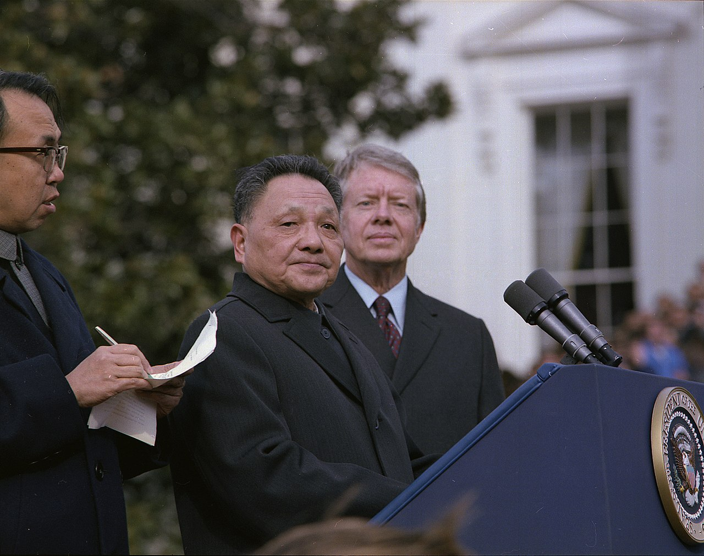
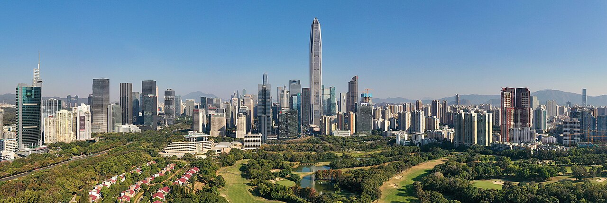
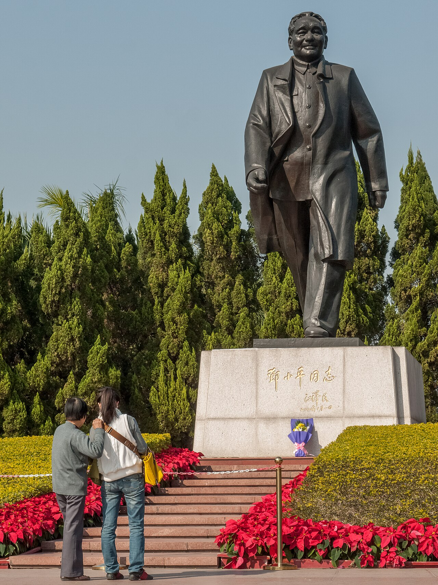

오늘날 강대국 중국을 만든 설계자예요. 그의 개혁개방이 '세계의 공장' 중국을 낳았고, 그것이 다음 시대 미중 경쟁의 씨앗이 됐죠. 빠른 성장의 빛과 톈안먼의 그림자를 함께 보여 주는 인물이에요. (탈냉전 → 잠에서 깬 중국)
생애
쓰촨의 지주 집안에서 태어나, 10대에 프랑스로 일하며 공부하러 떠났어요(근공검학). 그곳에서 공산주의를 접하고 혁명가의 길로 들어섰죠. 마오쩌둥과 함께 중국 혁명을 이뤘지만, 마오 시대에 두 번이나 권력에서 쫓겨났다가 다시 일어섰어요 — '오뚝이'라는 별명이 붙을 만큼요.
1976년 마오가 죽은 뒤, 덩은 실권을 잡고 중국의 방향을 완전히 틀었어요. '검은 고양이든 흰 고양이든 쥐만 잘 잡으면 된다'며, 공산국가이면서 시장경제와 외국 자본을 받아들인 거예요. 선전 같은 '경제특구'를 만들어 실험했고, 그 성공이 중국 전체로 퍼졌죠.
그의 개혁개방으로 수억 명이 가난에서 벗어났어요. 인류 역사상 손꼽히는 변화였죠. 하지만 1989년, 더 많은 자유를 요구하는 톈안먼 시위를 무력으로 진압한 어두운 책임도 있어요. '경제는 열되 정치는 닫는다' — 오늘날 강대국 중국의 토대이자 그 모순을, 그가 놓은 셈이에요.
자료로 보기 — 유묵·사진

백악관의 덩샤오핑 (1979)1979년 미국을 방문한 덩샤오핑(가운데)과 카터 대통령(오른쪽). 중국과 미국이 관계를 정상화하고, 중국이 세계로 문을 연 상징적 장면이에요.출처: Wikimedia Commons — NARA · 퍼블릭 도메인

선전의 오늘덩샤오핑이 1호 경제특구로 지정한 선전. 작은 어촌이 한 세대 만에 이런 마천루의 도시가 됐어요. 개혁개방의 결과를 한눈에 보여 주죠.출처: Wikimedia Commons · CC BY-SA 4.0

선전의 덩샤오핑 동상선전 롄화산 공원의 덩샤오핑 동상. 앞으로 성큼 걸어가는 모습이, 중국을 새 길로 이끈 그의 이미지를 담고 있어요.출처: Wikimedia Commons · CC BY-SA 4.0
남긴 말
“검은 고양이든 흰 고양이든, 쥐를 잘 잡는 고양이가 좋은 고양이다.”
이념(사회주의냐 자본주의냐)보다 실제 성과를 중시한 그의 실용주의를 보여 주는 말이에요. · 출처: 덩샤오핑의 유명한 비유
“가난은 사회주의가 아니다.”
'평등'을 내세우면서도 모두가 가난했던 과거를 비판하며, 성장의 필요성을 강조한 말이에요. · 출처: 개혁개방 시기 덩샤오핑 발언
연표
1904중국 쓰촨성 출생
1920프랑스로 근공검학(일하며 유학) — 공산주의를 접하다
1978실권 장악 — 개혁개방 시작
1979미국 방문 — 중·미 관계 정상화
1989톈안먼 시위 무력 진압 · 1997 사망
쓰촨의 소년에서 중국을 바꾼 설계자로
쓰촨의 시골에서 프랑스 유학을 거쳐 혁명가가 되고, 숱한 부침 끝에 중국의 방향을 통째로 바꾼 길이에요.
쓰촨에서 파리, 베이징을 거쳐 개혁의 상징 선전까지 — 실제 좌표 위에 표시했어요.
빛과 그림자실용주의 개혁으로 수억 명을 빈곤에서 끌어올린 업적은 거대해요. 하지만 경제적 자유는 허용하되 정치적 자유는 막았고, 1989년 톈안먼 민주화 시위를 무력으로 진압한 책임이 있죠. '성장'과 '인권'을 함께 물어야 할, 빛과 그림자가 뚜렷한 인물이에요.
더 깊이 (고등·일반)
세 번 쓰러지고 세 번 일어서다
덩샤오핑은 마오쩌둥 시대에 두 번이나 권력에서 숙청됐다가 복귀한, 놀라운 정치적 생존자예요('부도옹', 오뚝이). 문화대혁명 때는 아들이 박해로 장애를 입는 비극도 겪었죠. 이 부침의 경험이, 그가 권력을 잡은 뒤 '이념 투쟁'보다 '실용적 성장'을 택하게 만든 배경이 됐어요.
참고: 덩샤오핑의 정치적 부침
경제특구라는 실험
덩은 중국 전체를 한꺼번에 바꾸는 대신, 선전 같은 작은 '경제특구'를 먼저 만들어 시장경제를 실험했어요. 외국 자본과 기술을 들여와 성공하자, 그 모델을 전국으로 넓혔죠. 어촌이던 선전은 한 세대 만에 거대 도시가 됐어요. '돌다리도 두들겨 보고 건넌다'는 신중한 점진주의가 중국식 개혁의 특징이에요.
참고: 경제특구(선전 등)와 점진적 개혁
톈안먼의 그림자
1989년 봄, 베이징 톈안먼 광장에 모인 학생·시민들이 부패 척결과 더 많은 자유를 요구했어요. 덩은 결국 군대를 투입해 이를 무력으로 진압했고, 많은 희생자가 났죠. 그는 '경제 발전을 위해 안정이 우선'이라 여겼어요. 이 사건은 '경제는 열되 정치는 닫는' 오늘날 중국 체제의 성격을 결정지었고, 지금도 중국 안에서 공개적으로 말하기 어려운 주제로 남아 있어요.